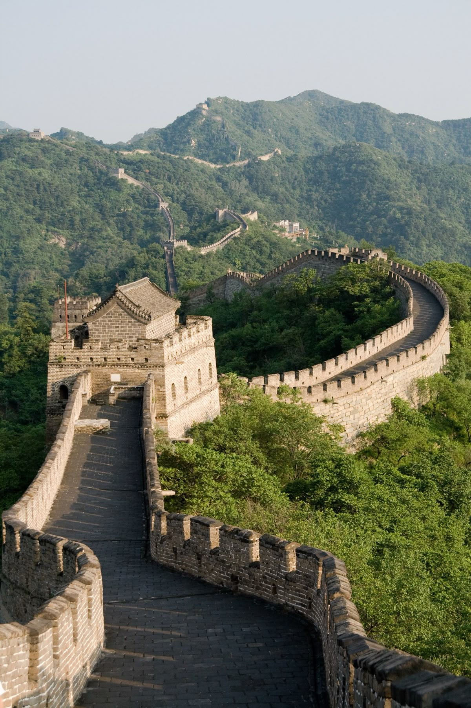
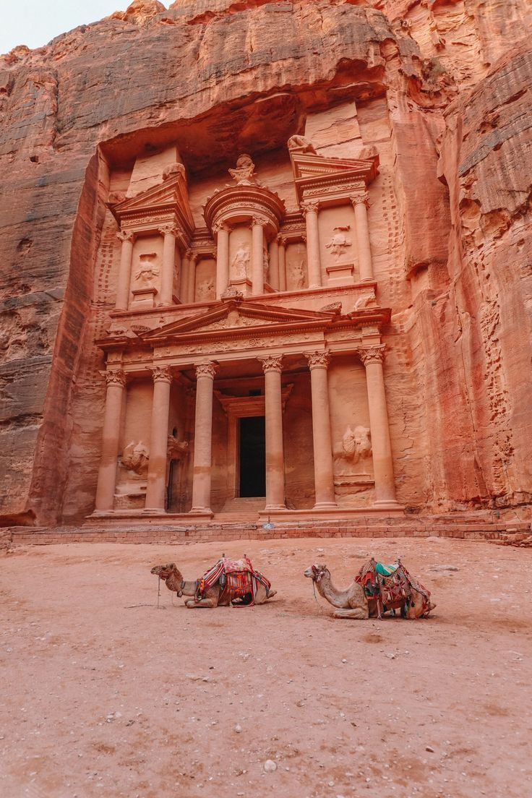
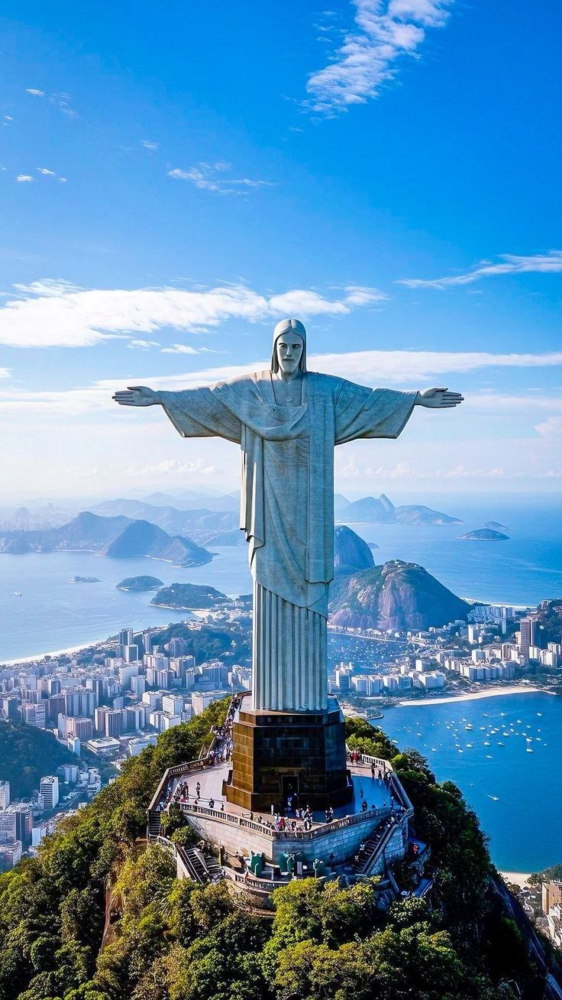
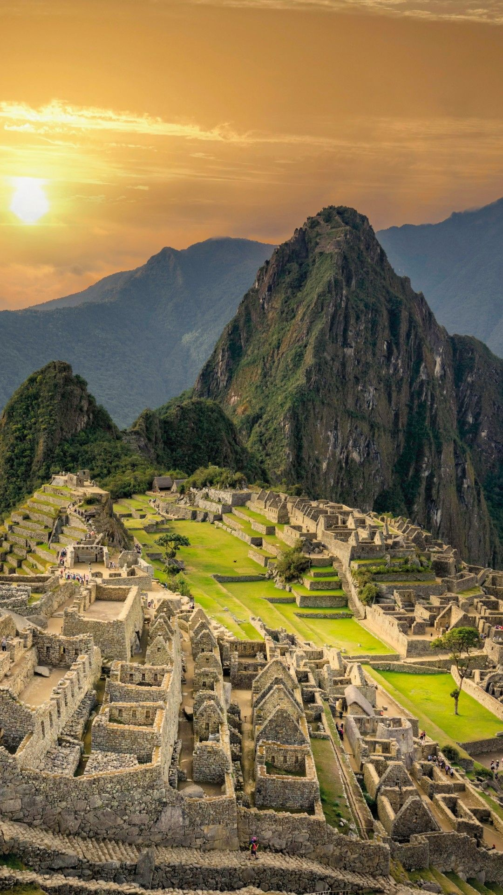
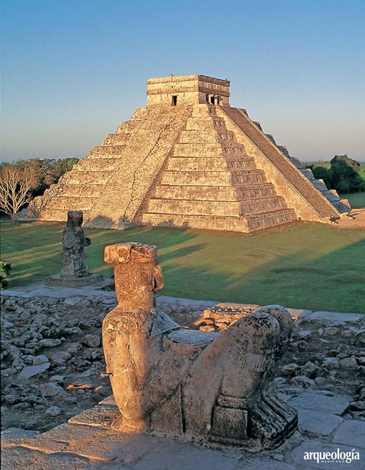
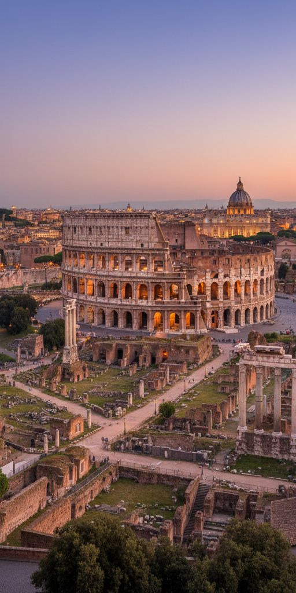
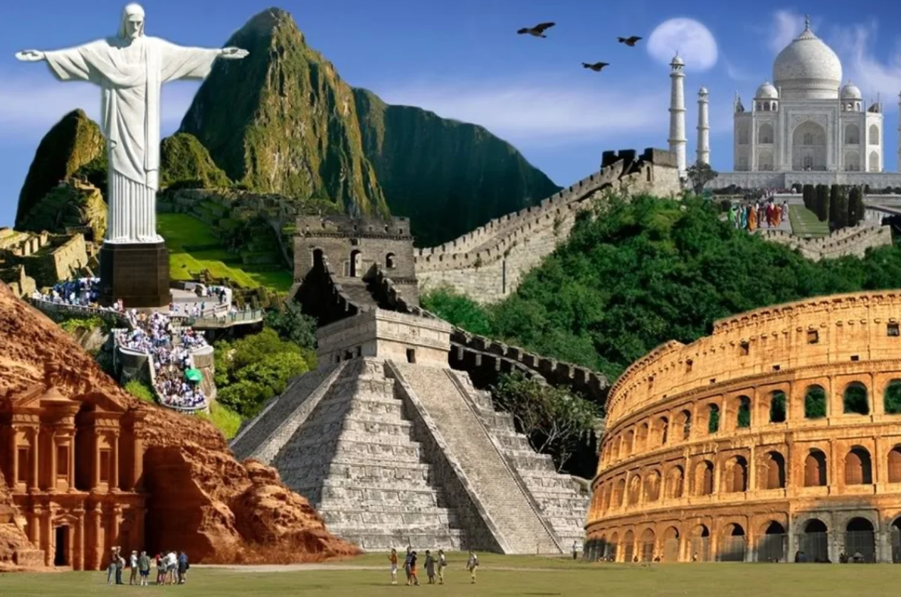

Great Wall Of China
Stretching over 13,000 miles, the Great Wall winds through mountains, offering breathtaking views and a deep connection to China's history.
MoreThe Great Wall of China isn’t just a wall—it’s one of the most awe-inspiring feats of human engineering in history. Stretching over 13,000 miles from the eastern coast of China to the Gobi Desert in the west, this monumental structure has captivated the imagination of historians, adventurers, and tourists for centuries.
But what makes the Great Wall so remarkable? Built and rebuilt over 2,000 years, this wall wasn't just a single structure, but rather a series of walls, watchtowers, and fortifications constructed by different dynasties. It served as a defense mechanism, protecting China from invading forces, primarily from the Mongols and other nomadic tribes. However, it wasn’t merely for defense—it also functioned as a symbol of imperial power and a means of controlling migration and trade. The Great Wall’s Beginnings
The earliest sections of the Great Wall were constructed as far back as the 7th century BC, during the Warring States Period. However, the most well-known sections were built by the Ming Dynasty (1368-1644). Under the Ming, the wall was reinforced and extended, turning it into the towering stone-and-brick structure we recognize today.
The Great Wall wasn’t just one continuous line. It was made up of separate walls that ran along mountains, deserts, and plateaus, connecting in some places and branching out in others. This made it even more complex and strategic, as defenders could communicate between distant sections of the wall.
Imagine thousands of workers, including soldiers, peasants, and prisoners, laboring to build the Wall in harsh conditions. Some sections were constructed using earth and wood, while others were reinforced with stone and brick. The labor was grueling, and the workers often faced extreme weather, treacherous terrain, and dangerous enemies. Despite these challenges, the Great Wall remains one of the most iconic and enduring symbols of ancient China’s strength.
Today, the Great Wall of China is not just a historical monument—it’s a symbol of China’s strength, perseverance, and pride. Visiting the Great Wall is a journey back in time. From the Ming Dynasty fortifications at Badaling to the more rugged and untouched sections like Jiayuguan, there’s something for everyone. Whether you want to hike along its winding path or simply stand in awe of its vastness, the Great Wall is one of the most awe-inspiring landmarks in the world.
The Great Wall of China stands as a testament to human endurance, strategy, and innovation. It’s more than just a wall; it’s a symbol of the ancient Chinese civilization and its deep connection with the land, the people, and the challenges they faced. Whether you're standing on top of the Wall or reading about it from afar, one thing is clear—the Great Wall of China is a monument that continues to inspire people from all over the world.

Stretching over 13,000 miles, the Great Wall winds through mountains, offering breathtaking views and a deep connection to China's history.
More
Carved into rose-red cliffs, Petra is a hidden city with stunning rock-cut architecture and intricate ancient water systems.
More
TOverlooking Rio de Janeiro, the statue is a symbol of peace and love, offering breathtaking views of mountains and beaches..
More
High in the Peruvian Andes, Machu Picchu offers stunning views, fascinating ruins, and insight into the ancient Inca civilization.
More
This Mayan site features the towering El Castillo pyramid and mystical cenotes, revealing the grandeur of an ancient civilization..
More
A symbol of ancient Rome, the Colosseum amazes with its size, history, and gladiatorial past, captivating visitors to this day.
More
Built by Emperor Shah Jahan in memory of his wife, the Taj Mahal is a stunning example of Mughal architecture and eternal love.
More
The Seven Wonders are iconic landmarks celebrated for their history, beauty, and the remarkable creativity of human civilizations.
More